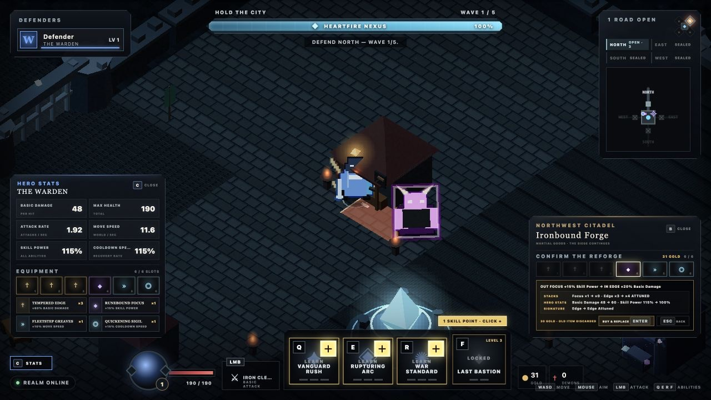

Hold the city
The Heartfire Nexus is always the objective. Gates may fall; the run ends only when the city loses its heart.
SIEGEHEART DEVELOPMENT COMPANION
A 1–4 player dark-fantasy action RPG about defending the Heartfire Nexus, surviving the breach, and carrying the fight back through the invasion rift.
Playable game hosting remains pending a configured Bun/WebSocket host.
LATEST VERIFIED CHECKPOINT · 0.1.14
A fourth matching ware now creates one clear specialist commitment inside the same six unrestricted slots. Its ordinary effect is counted twice once, while later copies return to familiar increments.
FROM 0.1.13 Two physical shops, four wares, 30-gold pacing, exact reforges, six unrestricted run-only sockets, and server-owned power remain intact.

The Heartfire Nexus is always the objective. Gates may fall; the run ends only when the city loses its heart.
Warden, Riftstalker, Ashcaller, and Gravebinder share one control grammar while changing how every horde is solved.
Survive the breach, stabilize the Nexus, then push together through the north road and destroy the Rift Heart.